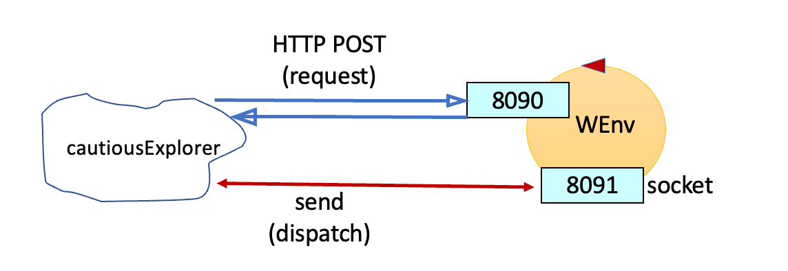

Introduction
This case-study starts to deal with the design and development of proactive/reactive software systems that use aynchronous exchange of information.
Requirements
Requirement analysis
The main user story (validated by the customer)
|
As a user, I put the robot in any starting position; subsequently, I activate the cautiousExplorer application that allows the robot to move around the room and return to its original position when it encounters an obstacle or when the sonar is activated. The application cannot be stopped by any user commands.
|
|
Problem analysis
We highlight that:
- In the VirtualRobot2021.html:commands the customer states
that the robot can receive move commands in two different ways:
- by sending messages to the port 8090 using HTTP POST
- by sending messages to the port 8091 using a websocket
- In this specific case we should proceed using the websocket mode, because it is much more useful to choose an asynchronous mode
- With respect to the technological level, there are many libraries in many programming languages that support the required protcols.
- I have no specifics when it comes to the robot's movements, that is, if they have to be random or organized
Logical architecture
We nust design and build a distributed system with two software macro-components:
- the VirtualRobot.html, given by the customer
- our cautiousExplorer application that interacts with the robot with a request-response pattern
or dispatch pattern
A first scheme of the logical architecture of the systems can be defined as shown in the figure.
|

|
Test plans
Based on this analysis, we can outline some different testing strategies. To make the discussion easier, we introduce the following abbreviations relating to the cril commands:
w: expresses the move {"robotmove": "moveForward", "time": 600}
s: expresses the move {"robotmove": "moveForward", "time": 600}
h: expresses the move {"robotmove": "moveForward", "time": 100}
l: expresses the move {"robotmove": "turnLeft", "time": 300}
r: expresses the move {"robotmove": "turnRight", "time": 300}
The robot will be asked to keep going until it finds an obstacle. It will then perform the path backwards to return to the original position.
Each time the robot executes a move we save the identifier of the move in a string
When the application ends the two strings must be made up as follows:
moves1: "wwwww"
moves2: "sssss"